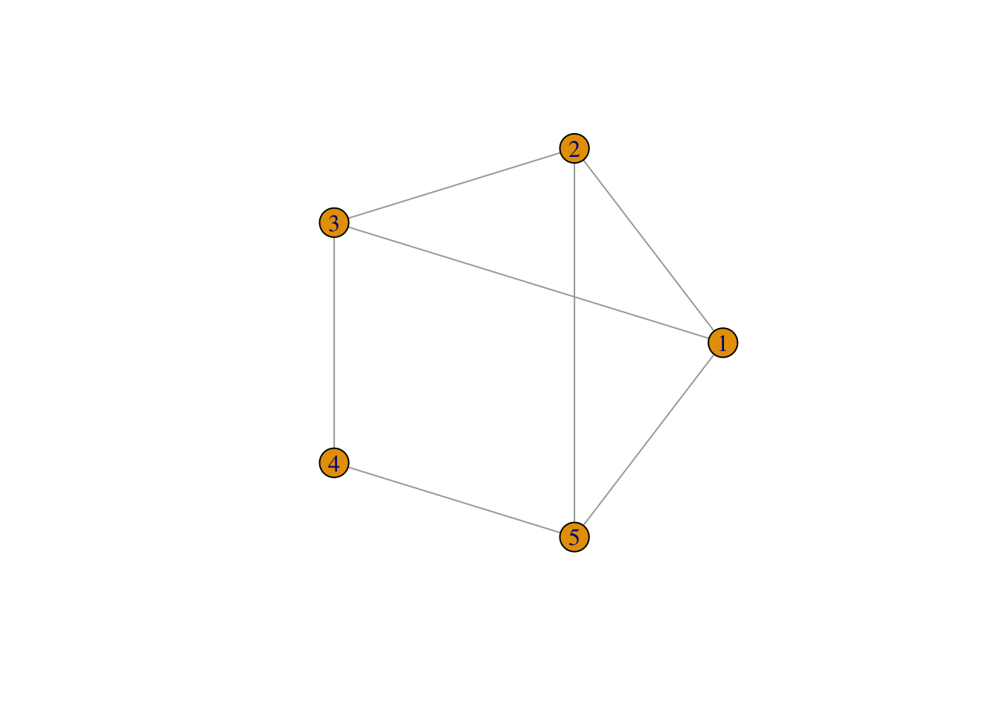
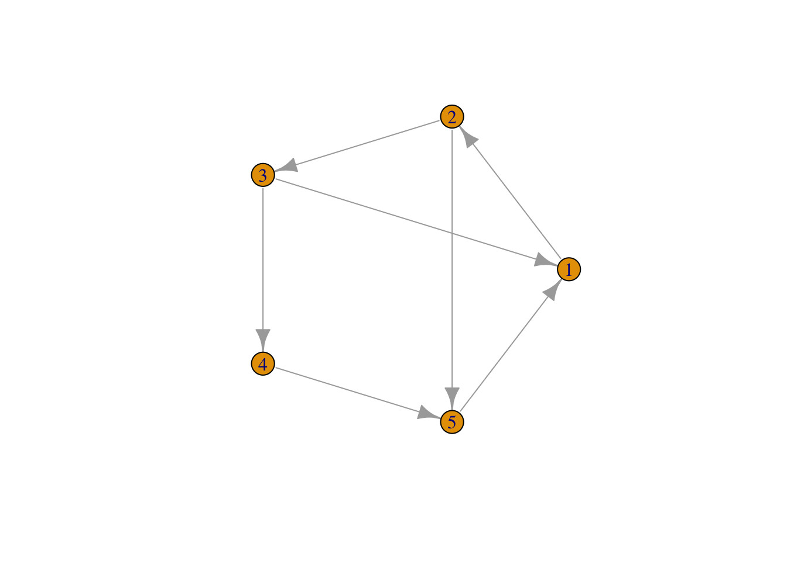
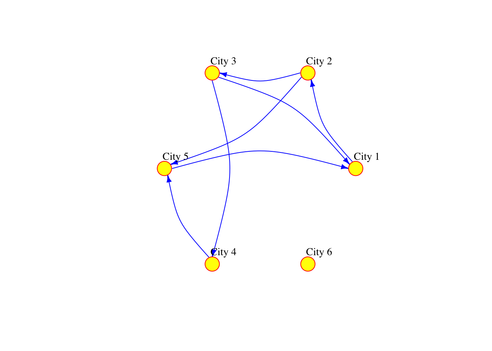
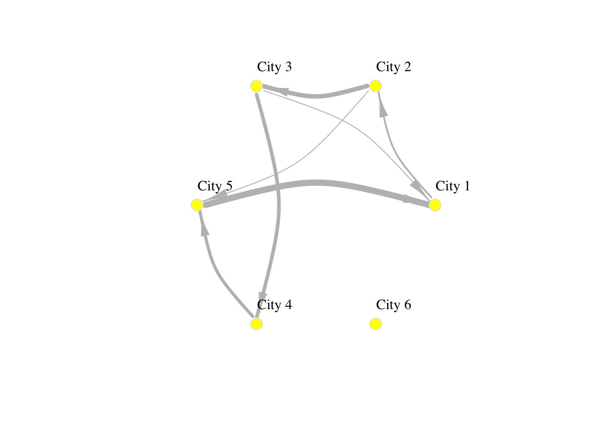
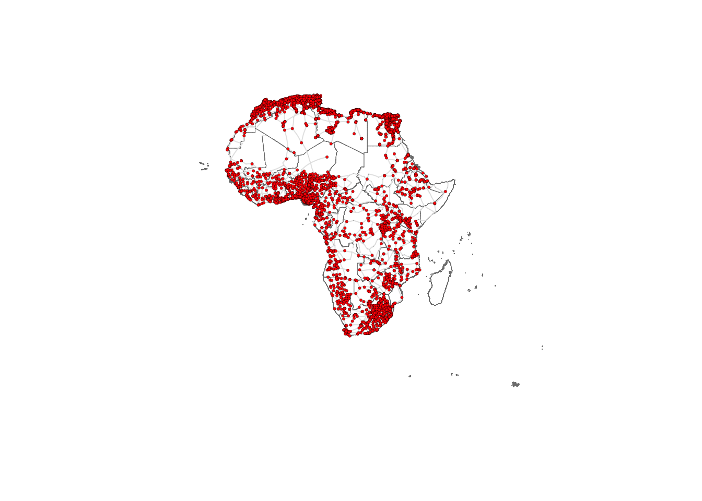
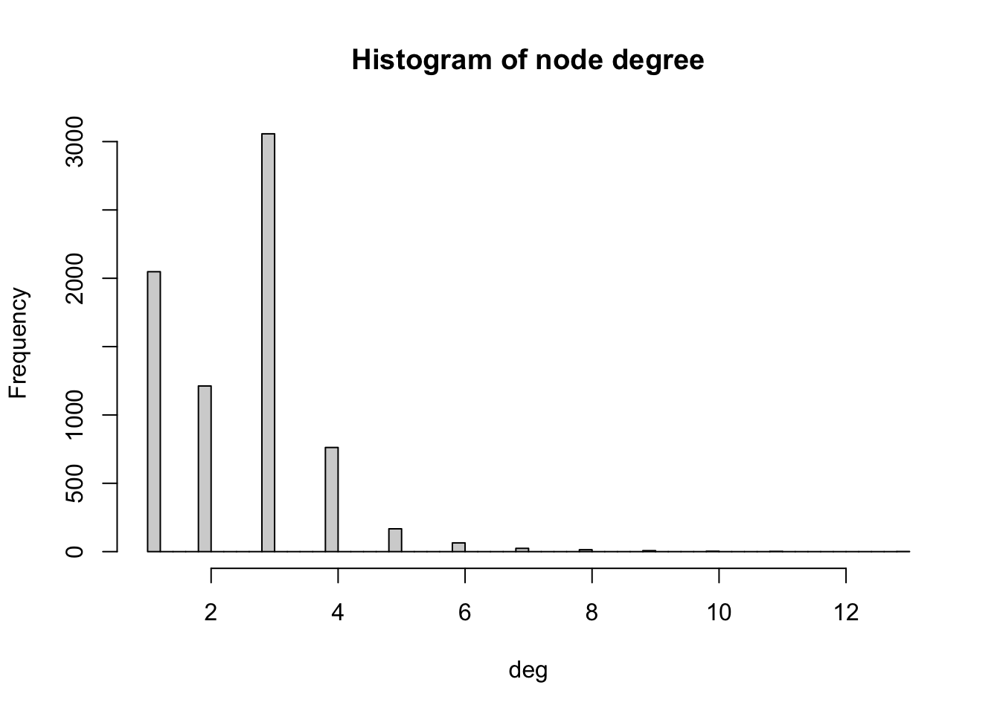
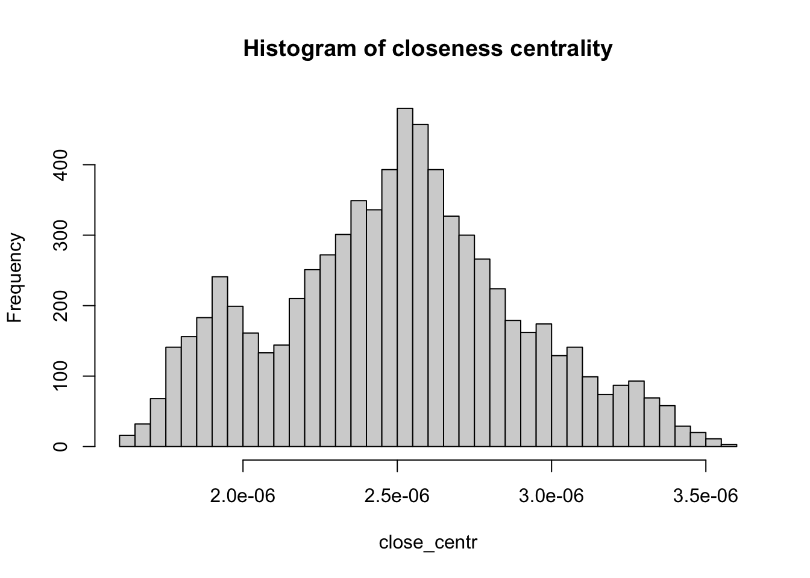
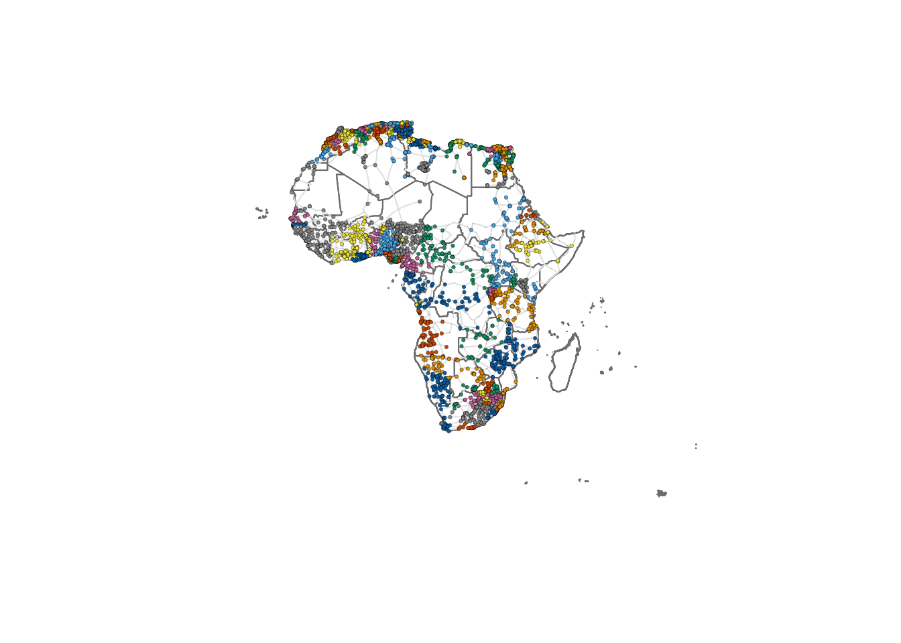

# working with spatial data
library(sf)
# data manipulation and visualisation
library(tidyverse)
library(igraph) # network manipulation and analysis
library(ggplot2) # Offers enhanced data visualization capabilities
library(tidygraph) # Helps in tidy manipulation of graph data structuresLab in R
We start by loading all the libraries required for this section.
Creating networks
Networks are used as a tool to conceptualise many real-life situations where a group of items display connections among themselves, such as the friendships among members of a school year group, airline flights between cities or hyperlinks between websites. Generally, a network (or a graph) consists of nodes (a.k.a. vertices) and edges (a.k.a. links) which represent the connections between the nodes of the network.
Starting from the basics
To understand the basic concepts and components of a network, we create a small example network in R using the igraph package. We create an undirected network of 5 nodes and 6 edges.
network <- graph(
n = 5, # add number of nodes
edges = c(1,2, # define edges between nodes
2,3,
2,5,
3,1,
3,4,
4,5,
5,1), # add edges
directed = FALSE ) # specify if the graph is directed or undirected
# plot
plot(network,
layout = layout.circle(network), # set layout of the plot as circular
vertex.label = 1:5) # assign labels to the vertices (nodes)
If the connections between the nodes of a network are non-reciprocal, the network is called directed.
# create a graph object
network <- graph(
n = 5, # add number of nodes
edges = c(1,2, # define edges between nodes
2,3,
2,5,
3,1,
3,4,
4,5,
5,1), # add edges
directed = TRUE ) # specify that the graph is directed
# plot
plot(network,
layout = layout.circle(network), # set layout of the plot as circular
vertex.label = 1:5) # assign labels to the vertices (nodes)
The network can also be defined as a list containing pairs of nodes with labels. In that case we do not need to specify the number of nodes. We only specify the isolated nodes to be included.
Note
We will describe the various arguments within plot which can be used to style your data visualisation
# create a graph object
network_isolated <- graph(
c("City 1","City 2",
"City 2","City 3",
"City 2","City 5",
"City 3","City 1",
"City 3","City 4",
"City 4","City 5",
"City 5","City 1"),
isolates=c("City 6") # isolated node
)
# plot
plot(network_isolated,
layout = layout.circle(network_isolated),
vertex.frame.color="red",
vertex.color="yellow",
vertex.size=15,
vertex.label.color="black",
vertex.label.cex=0.9,
vertex.label.dist=2.3,
edge.curved=0.3,
edge.arrow.size=.5,
edge.color = "blue"
) 
Adding attributes
We can add attributes to individual components of the network. To add attributes to nodes, we need to access them:
V(network_isolated)+ 6/6 vertices, named, from 155cacd:
[1] City 1 City 2 City 3 City 5 City 4 City 6Node attribute names are automatically generated from the node labels we assigned.
V(network_isolated)$name[1] "City 1" "City 2" "City 3" "City 5" "City 4" "City 6"Additional node attributes can be added, such as population size:
V(network_isolated)$population <- c(92000, 549000, 1786000, 74000, 8000, 21000)We can also access the edges:
E(network_isolated)+ 7/7 edges from 155cacd (vertex names):
[1] City 1->City 2 City 2->City 3 City 2->City 5 City 3->City 1 City 3->City 4
[6] City 4->City 5 City 5->City 1We can add edge attributes, such as the number of people moving from an origin to a destination city. We call this attribute edge weight. The size of the connection between two places often represent their importance or “weight” in the network.
E(network_isolated)$weight <- c(2000, 5000, 1000, 1000, 4000, 3500, 7000)We can examine the adjacency matrix of the network. The adjacency represents the presence of edges between different pairs of nodes. In our example, each row corresponds to an origin city and each column to a destination:
network_isolated[]6 x 6 sparse Matrix of class "dgCMatrix"
City 1 City 2 City 3 City 5 City 4 City 6
City 1 . 2000 . . . .
City 2 . . 5000 1000 . .
City 3 1000 . . . 4000 .
City 5 7000 . . . . .
City 4 . . . 3500 . .
City 6 . . . . . .We can also look at the existing node and edge attributes.
vertex_attr(network_isolated)$name
[1] "City 1" "City 2" "City 3" "City 5" "City 4" "City 6"
$population
[1] 92000 549000 1786000 74000 8000 21000And we can add network attributes:
network_isolated$title <- "Network of human mobility between cities"Basic visualisation
You have already seen how we can visualise networks using the base R function plot(). We will now elaborate on how individual components of the network can be visually adjusted using specific parameters in the plot function. More sophisticated data visualisations can be produced integrating geographic information, see Chapter 5 in Rowe, Cabrera-Arnau, and Piestrostefani (2023), or using other packages such as ggraph in conjunction with ggplot2 as we will see in the section on Percolation.
plot(network_isolated,
layout = layout.circle(network_isolated),
# adjust nodes
vertex.frame.color = "gray90", # line colour
vertex.label.color = "black", # label colour
vertex.label.cex = 1, # label font size
vertex.label.dist = 3, # label distance
vertex.color = "yellow", # colour
vertex.size=10, # size
# adjust edges
edge.curved=0.3, # curvature
edge.arrow.size=1.5, # size
edge.arrow.width=.5,
edge.width=E(network_isolated)$weight/1000,
edge.color = "gray") # colour
Spatial networks from data
So far in this computational notebook we have seen how to create networks with the igraph package with no input data. However, one of the most powerful features of the package is that it allows to easily create networks based on dataframes with information about the nodes and edges. Here, we work with a network of African roads constructed by considering all continental cities with more than 100,000 inhabitants as the nodes, obtained from (Moriconi-Ebrard, Harre, and Heinrigs 2016). The edges of the network were created based on the road infrastructure from OpenStreetMap (“Openstreetmap.org”), using all primary roads, highways and trunk roads. Each edge was constructed by measuring the physical distance of consecutive points that describe the intricate patterns of the roads. Thus, a reasonably good estimate of its road length is available for each edge. Additional nodes besides cities are needed to describe the road infrastructure, such as some road intersections. These nodes are labelled as “transport nodes” and help define possible routes between cities. Some transport nodes correspond to towns with less than 100,000 inhabitants, so they are labelled as attached to nearby cities. The urban network enables us to consider the existing roads in the continent and measure the travelling distance rather than the physical distance between cities. The constructed network is formed by 7,361 nodes (2,162 cities and 5,199 transport nodes) and 9,159 edges. For more details on how the network was built, see (Prieto-Curiel et al. 2022).
The network is connected, meaning that it is possible to find a sequence of nodes and existing roads linking any pair of cities, and therefore, it is also possible to find the shortest road distance between any two cities and define it as the network distance. The network consists of 361,000 km of road infrastructure and connects 461 million people living in African cities, representing roughly 39% of the continent’s population (Prieto Curiel, Cabrera-Arnau, and Bishop 2022).
Creating a network from a data frame
The data that specifies the nodes and edges of the African road network is stored in two csv files, one for nodes and one for edges. This data can be loaded in two data frames:
# Read the CSV file containing network nodes data from a URL
df_nodes <- read.csv("./data/Africa/AfricaNetworkNodes.csv")
# Read the CSV file containing network edges data from a URL
df_edges <- read.csv("./data/Africa/AfricaNetworkEdges.csv")We can then create an undirected graph as an igraph object from the data frames corresponding to the nodes and edges:
# Create a graph 'g_africa' from data frames 'df_edges' and 'df_nodes'
# The graph is undirected (directed = FALSE)
g_africa <- graph_from_data_frame(d = df_edges,
vertices = df_nodes,
directed = FALSE)We can have a look at the names of the vertex attributes, which are automatically taken from the columns in the df_nodes data frame:
# Retrieve the attribute names associated with vertices in the 'g_africa' graph
vertex_attr_names(g_africa)[1] "name" "agglosName" "x" "y" "Pop2015"
[6] "ISO3" "Region" "Between" "degree" where “name” is the ID of each node in the network, “agglosName” is the name of the city represented by the node, it is set to “road” if the node is a transport node. “x” and “y” represent the coordinates of each node, “Pop2015” is the population of the city nodes, “ISO3” is the code for the country that each node is situated in, “Region” represents the region within the African continent that each node is situated in, and “Between” and “degree” represent the betweenness centrality and the degree of each node in the network, which we will also compute below.
In particular, we can look at the first few values of any node attribute, for examples “Pop2015”:
# Retrieve the first few vertex names from the 'g_africa' graph
head(V(g_africa)$Pop2015)[1] 22995802 11847635 8530514 8314220 7270000 6979211We can also obtain the names of the edge attributes, which are taken from the columns in the df_edges data frame:
# Retrieve the attribute names associated with edges in the 'g_africa' graph
edge_attr_names(g_africa)[1] "l" "h" "time" "timeU" "timeUCB" "border" where “l” represents the length in kilometres by road segment and it considers curves, “h” is the type of edge (primary, highway, etc.), “time” is the estimated minutes to travel through the edge, considering different speeds for distinc types of road, “timeU” is also the estimated minutes to travel through the edge, but allowing extra time if the extrema of the edge are urban nodes, “timeUCB” allows extra time for edges that cross a border, “border” is a binary variable taking value 1 is it crosses a border and 0 otherwise and “added” is also a binary variable taking value 1 if an edge was artificially added to ensure the connectedness of the network and 0 otherwise.
Visualising the African road network as a spatial network
What does the African road network that we just built look like? We can find out very easily using the plot function. But in order to achieve a nice-looking graph, we need to play a bit with the values of the arguments of this function. For example, we will plot the size of the nodes according to the population of the cities that they represent. But some cities are orders of magnitude larger than others, which would result in some gigantic nodes for a few cities and tiny ones for the majority. In order to weaken this effect, we first apply a scaling function that redefines the size of the nodes:
# Calculate and assign a 'size' attribute to vertices in the 'g_africa' graph
# The size is determined based on the population data ('Pop2015') of each vertex
V(g_africa)$size <- 0.5*(V(g_africa)$Pop2015/10000)^0.4Now we are ready to plot the network, with a few extra modifications to the default plot in order to improve the appearance. As an exercise, you may want to try to plot the default visualisation by simply running plot(g_africa). If you do this, you will understand better why it is worth it spending some time playing with the values of the parameters in the plot function.
We will include the outline of the African countries in the background. To do this, we upload the necessary data:
df_borders <- st_read("./data/Africa/Africa_Boundaries.geojson") # Read GeoJSON file containing Africa boundaries into a data frameReading layer `Africa_Boundaries' from data source
`/Users/carmen/Library/CloudStorage/OneDrive-TheUniversityofLiverpool/github/gds/data/Africa/Africa_Boundaries.geojson'
using driver `GeoJSON'
Simple feature collection with 57 features and 5 fields
Geometry type: MULTIPOLYGON
Dimension: XY
Bounding box: xmin: -25.3618 ymin: -50.01889 xmax: 77.60327 ymax: 37.55986
Geodetic CRS: WGS 84We set the layout (lo) of the nodes in the network according to the x and y columns in df_nodes:
lo <- as.matrix(df_nodes[,3:4]) # Convert columns 3 and 4 of the data frame df_nodes into a matrix named loWe can now plot the background map with the country outlines as well as the network. Running the cell below might take some time depending on the processign power of your computer.
# Plotting geographic boundaries
plot(st_geometry(df_borders), # Plotting the geometry of Africa boundaries
border = adjustcolor("gray50"), # Setting border color with adjusted transparency
lwd = 0.5) # Setting line width
# Plotting the graph overlay
plot(g_africa, # Plotting the graph g_africa
layout = lo, # Using the layout defined in the matrix lo
rescale = FALSE, # Not rescaling the layout
vertex.size = V(g_africa)$size, # Setting vertex size based on graph data
edge.curved = 0.1, # Setting the curvature of edges
edge.width = 1, # Setting edge width
edge.color = "gray90", # Setting edge color
vertex.color = "red", # Setting vertex color
vertex.frame.color = "black", # Setting vertex frame color
vertex.frame.width = 0.2, # Setting vertex frame width
vertex.label = " ", # Hiding vertex labels
vertex.label.color = "black", # Setting vertex label color
vertex.label.cex = 0.45, # Setting the size of vertex labels
add = TRUE) # Adding this plot to the existing plot
Network metrics
The following metrics can help us obtain further insights into the network structure. They are also valuable as a way to characterise the network so it can later be compared to other networks or to itself through time.
Density
The density of a network refers to the proportion of existing edges over all possible edges. In a network with \(n\) nodes, the total number of possible edges is \(n \times (n-1)\). A density equal to \(1\) corresponds to a situation where \(n \times (n-1)\) edges are present. A network with no edges at all would have density equal to 0. We can obtain the density of the African network by running the following code:
# Calculate the edge density of the 'g_africa' graph
# Edge density is the ratio of the number of edges to the number of possible edges
# Loops (self-edges) are excluded from the calculation
edge_density(g_africa, loops=FALSE)[1] 0.0003381142The edge density is approximately 0.00034, giving as an indication that the network is quite sparse, since out of all possible edges, only 0.034% are present.
Reciprocity
The reciprocity in a directed network is the proportion of reciprocated connections between nodes (i.e. number of pairs of nodes with edges in both directions) from all the existing edges.
# Calculate the reciprocity of the edges in the 'g_africa' graph
reciprocity(g_africa)[1] 1The reciprocity of this UNdirected network is naturally 1 by definition.
Degree
The degree of a node is the number of edges connected to it. The in-degree of a node in a directed network is the number of edges ending in a given node. The out-degree is the number of edges starting from a given node. The degree() function allows computing the degree of one or more nodes, and specifying the measures of interest i.e. the total degree, in-degree or out-degree. In order to visualise the results, we produce a histogram
# Compute degree of the nodes given by v belonging to graph g_africa
deg <- degree(g_africa, v=V(g_africa))
# Produces histogram of the frequency of nodes with a certain in-degree
hist(deg, breaks = 50, main="Histogram of node degree")
We observe that most nodes have degree 3. Nodes of degree 1 are terminal nodes. Nodes of degree 2 are relatively less common than those of degree 1 and 3. This is likely due to the method used to build the network, where all the transport nodes of degree 2 are eliminated in order to simplify the network. Beyond degree 4, it is relatively rare to find any nodes. From the histogram, we see the maximum degree observed in the network is 13. Below, we obtain the name of the node with the maximum degree as well as the value of the degree (13).
# Retrieve the names of vertices in the 'g_africa' graph that have the highest degree
V(g_africa)$agglosName[degree(g_africa) == max(degree(g_africa))][1] "Duduza Central"# Retrieve the names of vertices (general names) in the 'g_africa' graph that have the highest degree
highest_degree_vertex_names <- V(g_africa)$name[degree(g_africa) == max(degree(g_africa))]
# Calculate the degree of vertices with the highest degree in the 'g_africa' graph
degree(g_africa, v=highest_degree_vertex_names)2896
13 Distances
A path in a network between node \(A\) and node \(B\) is a sequence of edges joining distinct nodes, starting at node \(A\) and ending at node \(B\). In a directed path all edges follow the same direction.
The path length of a path between nodes \(A\) and \(B\) is generally defined as the number of edges forming this path. The shortest path is the minimum count of edges present to travel from \(A\) to \(B\).
The path length can be defined in alternative ways. For example, the path length can be defined as the sum of the weights of the edges forming a path if the edges are weighted.
We can use the function shortest_paths() to find the shortest path between a given pair of nodes. For example, between Cairo and Lagos. We store the output of the shortest path function in a dataframe called df_shortest_path.
# Calculate the shortest paths between two specific vertices in the 'g_africa' graph
# The source vertex is "Cairo" and the target vertex is "Lagos"
# The length of the edges is used as weight in this calculation
# Both path nodes and edges are included in the output
df_shortest_path <- shortest_paths(g_africa, from = V(g_africa)$agglosName=="Cairo", to = V(g_africa)$agglosName=="Lagos", predecessors=FALSE, weights=df_edges$l, output = "both") In this dataframe, the field “epath” stores the edges of the shortest path as a one-element list. We can extract the values of this list as the edge ids, which we then use to compute the total length of the shortest path between the two cities.
# Retrieve the edge path indices from the first element of the 'epath' column in the 'df_shortest_path' data frame
idx <- df_shortest_path$epath[[1]]
# Retrieve the lengths of edges along the path using the 'edge_attr' function and 'g_africa' graph
lengths_epath <- edge_attr(g_africa, "l", idx)
# Calculate the sum of edge lengths along the path
sum(lengths_epath)[1] 6084.359We obtain that the shortest path is 6,084.359 km long. You can check for example on Google Maps what the distance by road is between the two cities. What do you obtain? What is the relative error between our estimation and the value from Google Maps?
Of all shortest paths in a network, the longest path length is the network diameter. The diameter of the African road network is the length of the longest shortest path between any pair of nodes:
diameter(g_africa, directed=FALSE, weights=NA)[1] 138The mean distance is the average length of all shortest paths in the network. The mean distance will always be smaller or equal than the diameter. It is given by:
mean_distance(g_africa, directed=FALSE, weights=NA)[1] 55.8602Centrality
Centrality metrics assign scores to nodes (and sometimes also edges) according to their position within a network. These metrics can be used to identify the most influential nodes. Two important centrality metrics are (1) closeness centrality, and (2) betweenness centrality. Closeness centrality is a measure of the shortest path length between a node and all the other nodes. For a given node, it is computed as the inverse of the average shortest paths between that node and every other node in the network. A node with closeness centrality close to 1 indicates that on average the node is very close to the other nodes in the network. A closeness centrality of 0 represents an isolated node. Below we compute the closeness centrality using unweighted edges and represent the results in a histogram. The distribution looks bimodal (this means that the histogram has two frequency peaks).
# Calculate the closeness centrality for each vertex in the 'g_africa' graph, using unweighted edges (weights = NA)
close_centr <- closeness(g_africa, weights = NA)
# Create a histogram of closeness centrality values with 50 breaks and set the main title
hist(close_centr, breaks = 50, main = "Histogram of closeness centrality")
Betweenness centrality is a measure of the number of shortest paths going through a node. Nodes with high values of betweenness centrality indicates that they play a very important role in the overall connectivity of the network. Betweenness can also be computed for edges. We also compute the betweenness centrality for all nodes and represent it as a histogram.
# Calculate the betweenness centrality for each vertex in the 'g_africa' graph
between_centr <- betweenness(g_africa, v = V(g_africa), directed = TRUE, weights = NA)
# Create a histogram of betweenness centrality values with 30 breaks and set the main title
hist(between_centr, breaks = 30, main = "Histogram of betweenness centrality")
Note
How would you interpret the patterns observed in the histograms for closeness centrality and betweenness centrality?
Community detection
Community detection in network theory refers to the process of identifying groups or communities of nodes within a network that exhibit a higher density of connections internally compared to the connections between different groups. The goal is to uncover the underlying structure or organisation within a network by clustering nodes into distinct communities based on the patterns of connections or interactions between them.
There are various algorithms and methods used for community detection, each with its own approach. Here, we use cluster_walktrap a function used for community detection in networks based on the Walktrap algorithm. The Walktrap algorithm is an approach for identifying communities in a network by leveraging random walks. It works by simulating short random walks within the graph and measuring the similarity between nodes based on how likely they are to be visited in the same random walk. Nodes that are frequently visited together are considered to belong to the same community. Understanding random walks is beyond the scope of this module. However, you should know that the weights argument in the cluster_walktrap function controls the weights of the edges. If it is NULL and the input graph has a ‘weight’ edge attribute, then that attribute will be used. If NULL and no such attribute is present, then the edges will have equal weights. Set this to NA if the graph was a ‘weight’ edge attribute, but you don’t want to use it for community detection. Larger edge weights increase the probability that an edge is selected by the random walker. In other words, larger edge weights correspond to stronger connections. Here, we set weights to be the inverse of the time to traverse an edge taking into account the effect of urban areas and borders.
communities <- cluster_walktrap(
g_africa,
weights = 1/df_edges$timeUCB,
steps = 1000,
merges = TRUE,
modularity = TRUE,
membership = TRUE
)We can now replot the network colouring the nodes according to the community where they belong. Note that nodes that are nearby each other, tend to belong to the same community.
plot(st_geometry(df_borders), border=adjustcolor("gray50"))
plot(g_africa, layout=lo, rescale = FALSE, vertex.size=V(g_africa)$size, edge.curved=0.1, edge.width=1, edge.color ="gray90", vertex.color=membership(communities), vertex.frame.color="black", vertex.frame.width=0.2,
vertex.label=" ", vertex.label.color="black",
vertex.label.cex=.45, add = TRUE)